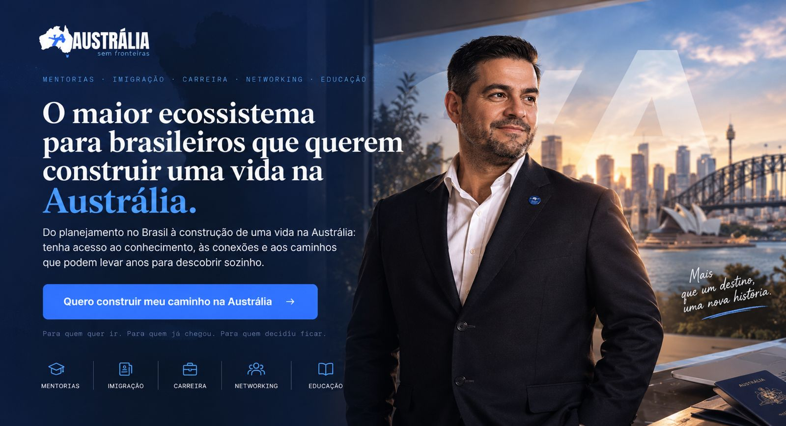
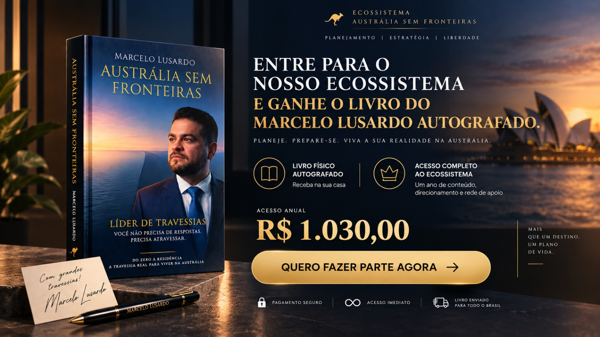

O maior ecossistema para brasileiros que querem construir uma vida na Austrália.
Do planejamento no Brasil à construção de uma vida na Austrália: tenha acesso ao conhecimento, às conexões e aos caminhos que podem levar anos pra descobrir sozinho. Mentorias, imigração, carreira, networking e educação. Para quem quer ir, para quem já chegou, para quem decidiu ficar.
Quero construir meu caminho na AustráliaAntes de continuar, olhe pros números
E se a sua vida pudesse ser maior do que é hoje?
*Dados oficiais australianos, 2026 — Fair Work Ombudsman e ABS. Valores e condições variam conforme vínculo, ocupação, award, experiência e elegibilidade.
Existe uma Austrália cheia de possibilidades.
Mas chegar lá sem um plano pode transformar oportunidade em frustração.
O problema não é chegar à Austrália.
É não saber o que fazer depois.
- "Qual visto?"
- "Como me preparo?"
- "Cheguei. E agora?"
- "Onde estão as oportunidades?"
- "Como renovo?"
- "Como faço as conexões certas?"
- "Como construo um caminho de longo prazo?"
Sem direção, cada decisão pode custar tempo, dinheiro e oportunidades.
Não é sobre trocar de país
Você não está pensando apenas em mudar de país.
Está pensando em mudar as possibilidades da sua vida.
BR BRASIL
AU AUSTRÁLIA
Dados brasileiros: Agência Brasil / IBGE (salário mínimo 2026) e IBGE/PNAD Contínua (rendimento médio real habitual, 1º tri/2026). Dados australianos: Fair Work Commission e ABS. Moedas não convertidas de propósito — comparação de escala, não de poder de compra equivalente.
A oportunidade existe. A diferença está em como você se prepara para aproveitá-la.
Muita gente chega com um sonho.
E começa a improvisar a própria vida.
Você não precisa descobrir a Austrália sozinho.
Imagine ter um mapa antes de começar a caminhar.
Austrália Sem Fronteiras — um ecossistema criado pra te ajudar a entender onde você está, onde quer chegar e quais caminhos precisa conhecer pra construir sua trajetória na Austrália.
A diferença entre tentar e ter um plano.
Sem o ecossistema
- Dúvida: "será que estou escolhendo certo?"
- Google + grupos + vídeos
- Informação desencontrada
- Tentativa e erro
- Anos construindo contatos
- "E agora?"
Com o ecossistema
- Diagnóstico
- Plano
- Caminho das pedras
- Mentoria
- Especialistas
- Conexões
- Próximo passo claro

Quem está por trás do ecossistema
Ele não aprendeu a Austrália em um curso.
Ele viveu o caminho.
- Marcelo Lusardo deixou pra trás uma vida profissional estável no Brasil.
- Foi pra Austrália com a família e um filho pequeno.
- Recomeçou.
- Construiu relacionamentos.
- Entendeu o mercado.
- Criou oportunidades.
- Construiu sua trajetória.
- E transformou experiência em negócio.
Hoje, Marcelo é sócio da Expert Education e atua diretamente no mercado de educação internacional.
Ele levou anos pra construir o acesso que agora você pode encontrar em um único lugar.
Você não vai apenas descobrir o caminho.
Você terá quem ajude a percorrê-lo.
O Austrália Sem Fronteiras prepara você para a jornada. A Expert Education entra para ajudar a transformar o plano em processo.
Austrália Sem Fronteiras
Clareza para saber para onde ir.
Mentorias • Planejamento • Mentalidade • Carreira • Networking • Oportunidades
Estrutura para saber como chegar.
Educação • Escolas e universidades • Aplicações • Vistos • Renovações • Suporte especializado
Do plano à execução.
Você não recebe um mapa e é deixado sozinho na estrada.
Quer ir para a Austrália?
Você se prepara.
Precisa escolher o melhor caminho?
Você encontra direção.
Chegou a hora de estudar e aplicar?
A Expert entra em campo.
Precisa renovar seu visto?
Existe uma estrutura preparada para orientar o processo.
Seu objetivo é construir uma vida de longo prazo na Austrália?
Você encontra profissionais especializados para avaliar os caminhos possíveis para o seu caso.
Você muda de fase.
O ecossistema continua com você.
E você não está colocando seu sonho nas mãos de quem começou ontem.
Por trás do ecossistema está a estrutura da Expert Education & Visa Services, referência em educação internacional e suporte a estudantes que querem construir sua trajetória na Austrália.
*Expert Education & Visa Services, fundada em 2003. Número de estudantes conforme material institucional da Expert — confirmar antes de publicar.
E é dessa operação que Marcelo Lusardo faz parte como sócio.
Ele não vai só contar como conseguiu
Ele vai ajudar você a enxergar o seu próprio caminho.
Marcelo já esteve exatamente do outro lado dessa travessia — e hoje, como sócio da Expert Education, vive diariamente o mercado que ajuda brasileiros a chegarem à Austrália. Ele transforma essa experiência em direção pra quem está começando, ou tentando descobrir qual é o próximo passo.
O que levou anos pra Marcelo construir, você não precisa começar do zero pra descobrir.
Quero construir meu caminho na AustráliaSeu sonho não termina no embarque.
Eu quero viver na Austrália.
Austrália Sem Fronteiras
Entenda o caminho.
Expert Education
Tire o plano do papel.
Ecossistema
Construa sua vida na Austrália.
Do Brasil à Austrália. Da chegada ao próximo passo.
Antes de virar ecossistema, foi um livro
"Austrália Sem Fronteiras" também é um livro real, escrito por quem atravessou.
Em Do Zero à Residência, Marcelo Lusardo conta sua própria travessia — sem filtro, sem fórmula pronta. A Austrália foi o cenário. A travessia de verdade aconteceu dentro dele. E talvez esteja começando a acontecer dentro de você também.
"Você não precisa de respostas. Precisa atravessar."

Quero fazer parte agoraPrefere comprar só o livro, sem o ecossistema?
Não é só conteúdo
É direção.
Mentoria com Marcelo
Experiência real de quem construiu a própria trajetória na Austrália.
Agente de imigração
Orientação especializada pra compreender caminhos e possibilidades migratórias.
Caminho das pedras
O que preparar, quando preparar e quais decisões precisam entrar no radar.
Plano de direção
Entenda seu momento e quais próximos passos fazem sentido pro seu objetivo.
Oportunidades
Aprenda onde procurar e como se posicionar pro mercado australiano.
Networking
Conecte-se com pessoas que já estão construindo suas trajetórias no país.
Educação
Parceiros, escolas, colleges, universidades e benefícios do ecossistema.
Mentalidade
Porque mudar de país exige muito mais do que comprar uma passagem.
Onde você está hoje?
Quero ir
"Quero sair do Brasil, mas não sei por onde começar."
- Preparação
- Estudos
- Planejamento
- Primeiros passos
Já estou aqui
"Cheguei. Agora preciso construir meu próximo passo."
- Carreira
- Networking
- Renovação
- Direção
Quero ficar
"A Austrália deixou de ser uma experiência. Quero construir meu futuro aqui."
- Estratégia
- Especialistas
- Planejamento migratório
- Conexões
"Mas eu posso pesquisar tudo isso sozinho."
Pode.
Você pode assistir centenas de vídeos.
Entrar em dezenas de grupos.
Pesquisar cada etapa.
Conhecer pessoas aos poucos.
Errar. Corrigir.
E construir sua rede durante anos.
A pergunta não é se você consegue sozinho.
É quanto tempo você quer gastar descobrindo o caminho.
+131 MIL
inscritos no canal Austrália Sem Fronteiras
Anos falando com brasileiros que têm o mesmo sonho que você.
Quanto custa tomar uma decisão errada em outro país?
Um curso que não fazia sentido?
Meses sem direção?
Uma oportunidade que você nem soube que existia?
Anos tentando construir sozinho uma rede?
Agora compare isso ao valor de entrar já sabendo onde procurar as respostas.
AUSTRÁLIA SEM FRONTEIRAS
- ✓ Marcelo Lusardo
- ✓ Agente de imigração
- ✓ Mentorias
- ✓ Trilhas passo a passo
- ✓ Carreira
- ✓ Networking
- ✓ Mentalidade
- ✓ Comunidade
- ✓ Parceiros e benefícios
- 🎁 Livro "Austrália Sem Fronteiras" incluso
Compra segura · acesso liberado após confirmação
Perguntas antes de decidir
Ainda estou no Brasil. Serve pra mim?
Sim — o ecossistema começa exatamente aí: preparação, estudos e planejamento antes de qualquer passagem comprada.
Já estou na Austrália. Vale a pena?
Sim — a maior parte de quem já chegou trava justamente na etapa seguinte: carreira, networking e renovação sem estratégia. É pra isso que o ecossistema também existe.
Quero residência. O ecossistema pode me ajudar?
Ele te dá direção, plano e acesso ao agente de imigração pra entender caminhos possíveis pro seu caso — mas leia a próxima pergunta com atenção.
Existe garantia de visto ou residência?
Não. Nenhuma mentoria, curso ou agente pode garantir a concessão de um visto ou residência — isso depende de análise individual dos órgãos de imigração australianos. Quem afirma o contrário não está sendo honesto com você.
Vocês garantem emprego ou sponsorship?
Não. Fornecemos preparação, conhecimento e oportunidades de networking. O resultado individual depende de cada pessoa e não pode ser garantido por nós.
Quem é o agente de imigração?
Um agente de imigração registrado, parceiro do ecossistema, disponível pra orientar sobre caminhos e possibilidades migratórias dentro do programa.
Como funcionam as mentorias com Marcelo?
Encontros ao vivo dentro do ecossistema, com espaço pra tirar dúvidas reais de quem já fez essa travessia.
Por quanto tempo tenho acesso?
O acesso ao ecossistema é anual.
Daqui a alguns anos, você pode olhar pra trás e lembrar do dia em que decidiu ir.
A questão é como você quer chegar até lá.
Tentando descobrir tudo sozinho?
Ou cercado de conhecimento, especialistas, direção e pessoas que já conhecem o caminho?
A Austrália pode ser o seu próximo capítulo.
Você não precisa escrevê-lo sozinho.